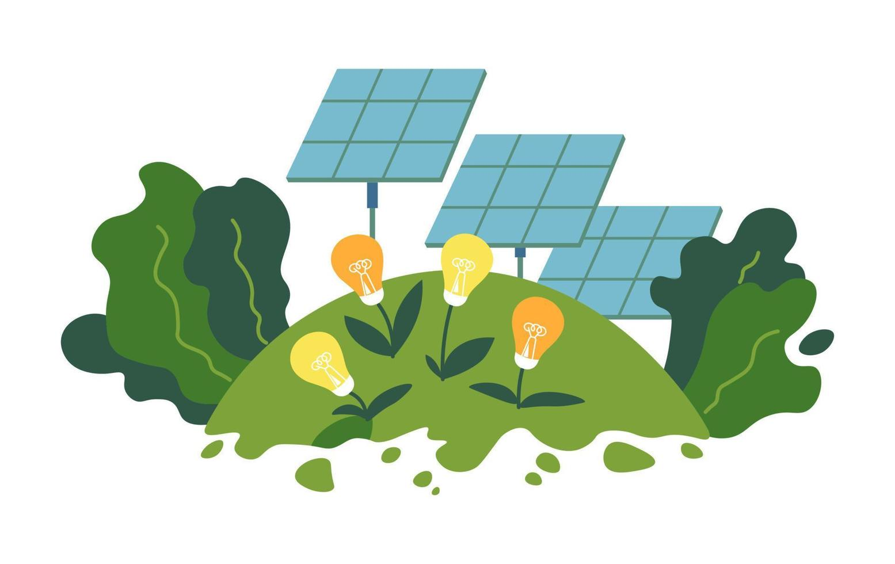

What does this data signify?

The data above elucdates a notable shift from non-renewable to renewable energy sources in Victoria between 2008 and 2022. For non-renewable energy, the mean usage was 45,734 GWh, while the median stood at 47,779.9 GWh. The range of non-renewable energy usage spanned 18,667.5 GWh, indicating it was inconsistant. On the other hand, for renewable energy, the mean was 8,744 GWh, and the median was 7,761.6 GWh, with a range of 15,824.1 GWh. As expected, there was no mode for either non-renewable or renewable energy due to a lack of recurring identical energy usage values across the years. Renewable energy showed a positive trend, with it surging from 3,123.6 GWh in 2008-09 to 18,947.7 GWh in 2021-22, an astonishing 506.6% increase, particularly in 2021-22. In contrast, non-renewable energy has steadily declined rom 53,627.4 GWh in 2008-09 to 34,959.9 GWh in 2021-22, marking a 34.8% decline, with notable plummets after 2017-18. While non-renewable energy still dominates energy production, its gap with renewables is narrowing, signalling that the transition to greener energy sources is nigh.
The acceleration of this shift is likely influenced by increased investments in renewable technologies and policy changes such as the 2050 net zero emissions plan. However, to ensure long-term sustainability for Victoria's electric public transport system, it is essential to continue the development of renewable energy sources. This can be done by increasing funding for research and development into renewable energy generation, which will help further lower the price of renewable energy and slowly render fossil fuels obsolete. Victoria’s government could also provide tax breaks or grants to large-scale renewable energy projects to further incentivise the production of green energy. In this way, by focusing on the development of greener energy, Victoria’s public transport system can become more sustainable and contribute to a cleaner yet more energy efficient future Victoria.